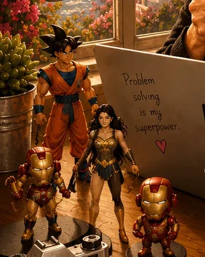

📺
Cartoni anni '80
Eroi, avventure e sigle di un'epoca che non passa mai di moda.
Sono cresciuta con i cartoni degli anni '80 e ancora oggi i personaggi, le storie e le action figure mi fanno viaggiare anche da casa.

Mi piacciono le storie che sanno farsi ricordare, quelle in cui un personaggio o una scena restano in testa molto dopo averle viste o lette.
Eroi, avventure e sigle di un'epoca che non passa mai di moda.
Piccoli personaggi che popolano la mia scrivania e mi tengono compagnia mentre lavoro e scrivo.
Accanto alla nostalgia leggo anche qualcosa di recente. E il fumetto mi interessa anche da autrice: Origin Movie, il mio libro illustrato, è appena uscito.
Scopri Origin Movie →Qui metterò la lista dei cartoni, dei personaggi e delle letture che mi sono rimasti di più. Hai un consiglio? Scrivimi: lo leggo volentieri.